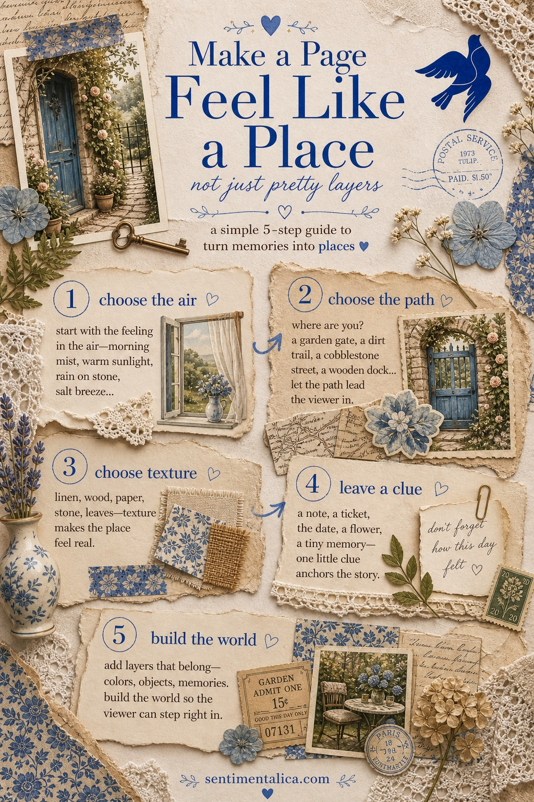

A page feels like a place when it has more than decorations. It needs air, a path, texture, and one small clue that tells the reader where they are.

Start with the air. Is the page a candlelit room, a garden morning, a summer trail, or an evening street? Pick one light quality before you pick the papers. The light decides the mood.
Then give the eye a path. A gate, a map line, a table edge, a doorway, or a strip of patterned paper can move the viewer through the spread. Without a path, beautiful pieces can still feel scattered.
If you want a ready-made place mood, choose pages that already have a strong world: lantern streets, trail maps, desert travel, cottage gardens. Then add your own tiny clue, like a date or a remembered color.
For more gentle junk journal ideas and color inspiration, keep reading the Sentimentalica journal.